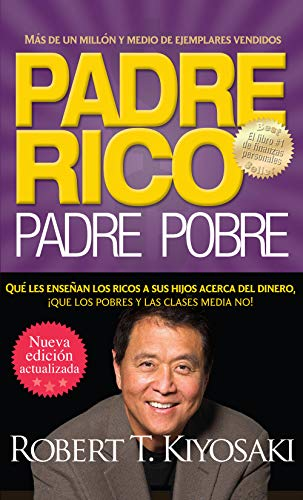

Libros Recomendados

Padre Rico Padre Pobre
Robert T.Kiyosaki
Padre rico, padre pobre es el libro de finanzas personales número uno en todo el mundo, el manual de Robert T. Kiyosaki que enseña a las personas a hacerse millonarias.

Anti-Marx
Juan Ramón Rallo
Juan Ramón Rallo reconstruye y destruye en dos tomos el pensamiento económico de Marx.
La Psicologia Del Dinero
Morgan Housel
En cuestiones de dinero, lo que importa no es lo listo que seas sino cómo te comportas.

Piense Y Hágase Rico
Napoleon Hill
"Piense y hágase rico", de Napoleon Hill, es un libro sobre finanzas personales que explica cómo las personas pueden alcanzar el éxito financiero.